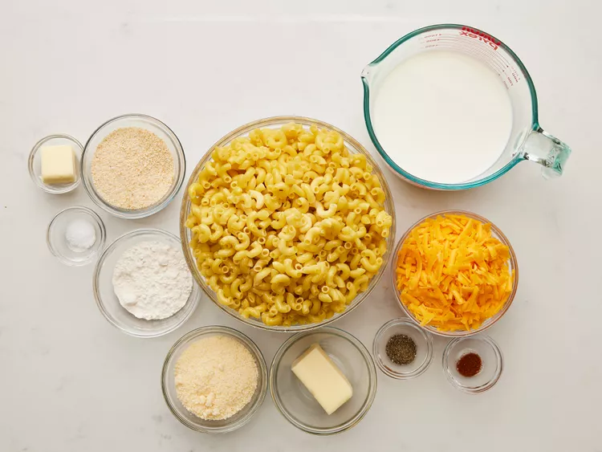
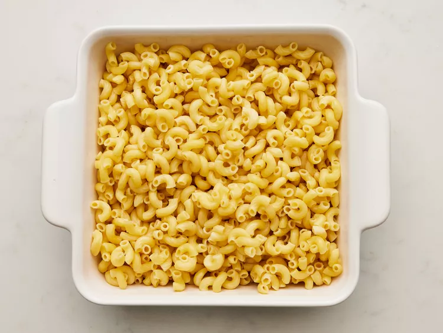
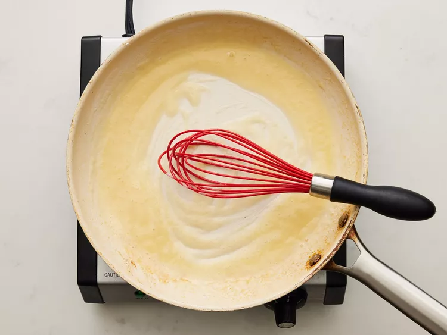
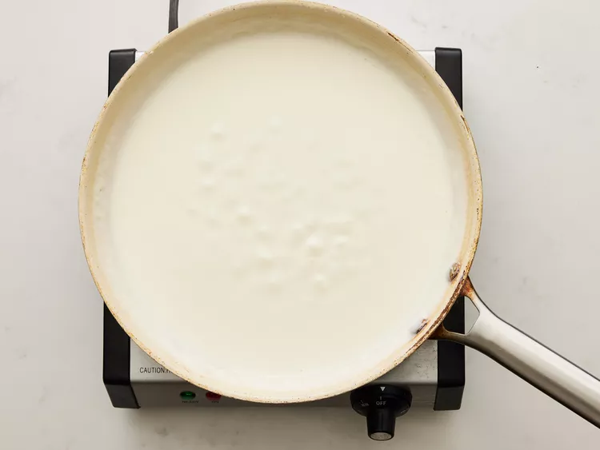
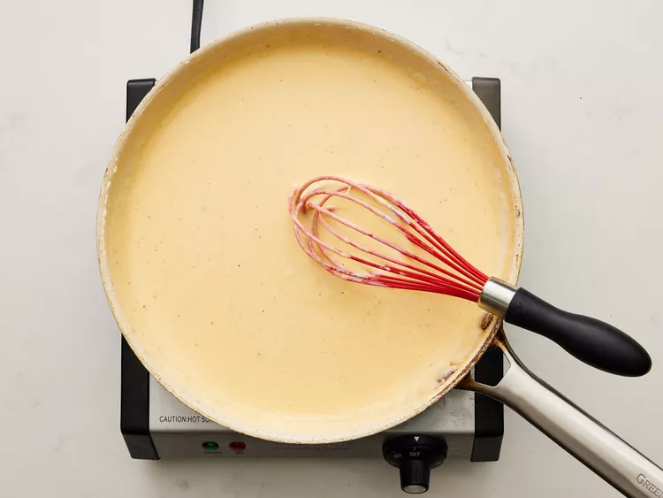
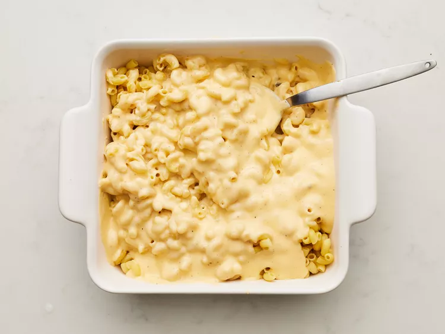
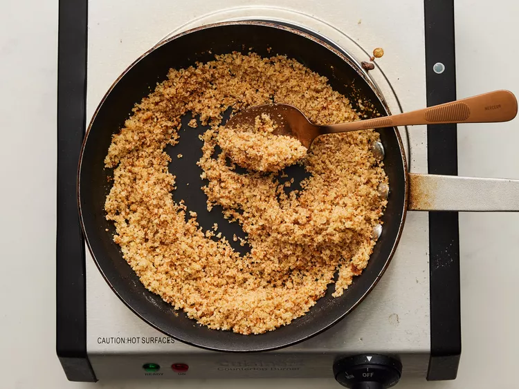
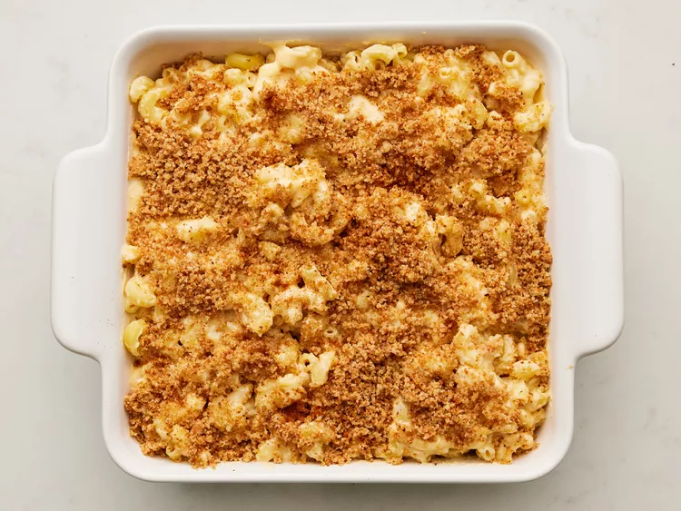
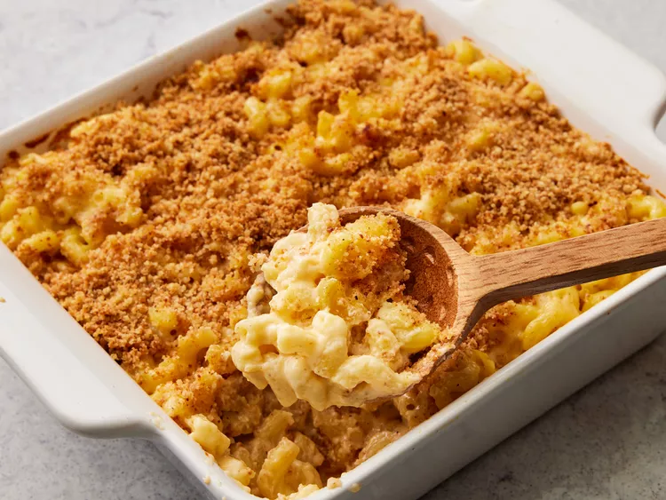

Homemade Mac and Cheese

Homemade mac and cheese is the ultimate comfort food, made with tender pasta smothered in a rich, creamy cheese sauce.
Unlike store-bought versions, this dish offers a velvety texture and an irresistible cheesy flavor,
perfect for satisfying cravings or sharing with loved ones.
What makes homemade mac and cheese special is its simplicity and flexibility.
You can customize it with your favorite cheeses, add a crispy breadcrumb topping, or mix in extras like bacon or veggies.
It's a warm, hearty dish that feels like a hug in a bowl!
ingredients
- macaroni and cheese
- 8 ounces uncooked elbow macaroni
- ¼ cup salted butter
- 3 tablespoons all-purpose flour
- 2 ½ cups milk, or more as needed
- 2 cups shredded sharp Cheddar cheese
- ½ cup finely grated Parmesan cheese
- salt and ground black pepper to taste
- Bread crumb Topping
- 2 tablespoons salted butter
- ½ cup dry bread crumbs
- 1pinch ground paprika
Directions
- Gather all ingredients. Preheat the oven to 350 degrees F (175 degrees C). Grease an 8-inch square baking dish.

- To make the macaroni and cheese : Bring a large pot of lightly salted water to a boil. Add macaroni and simmer,
stirring occasionally, until tender yet firm to the bite, about 8 minutes; it will finish cooking in the oven.
Drain and transfer to the prepared baking dish.

- While the macaroni is cooking, melt 1/4 cup butter in a medium skillet over low heat.
Whisk in flour and stir until the mixture becomes paste-like and light golden brown, 3 to 5 minutes.

- Gradually whisk 2 ½ cups milk into the flour mixture, and bring to a simmer.

- Stir in shredded Cheddar and finely grated Parmesan cheeses; season with salt and pepper.
Cook and stir over low heat until cheese is melted and sauce has thickened, 3 to 5 minutes,
adding up to 1/2 cup more milk if needed.

- Pour cheese sauce over macaroni and stir until well combined.

- Make the bread crumb topping: Melt 2 tablespoons butter in a skillet over medium heat.
Add bread crumbs; cook and stir until well coated and browned.

- Spread bread crumbs over macaroni and cheese, then sprinkle with paprika.

- Bake in the preheated oven until topping is golden brown and macaroni and cheese is bubbling, about 30 minutes.
